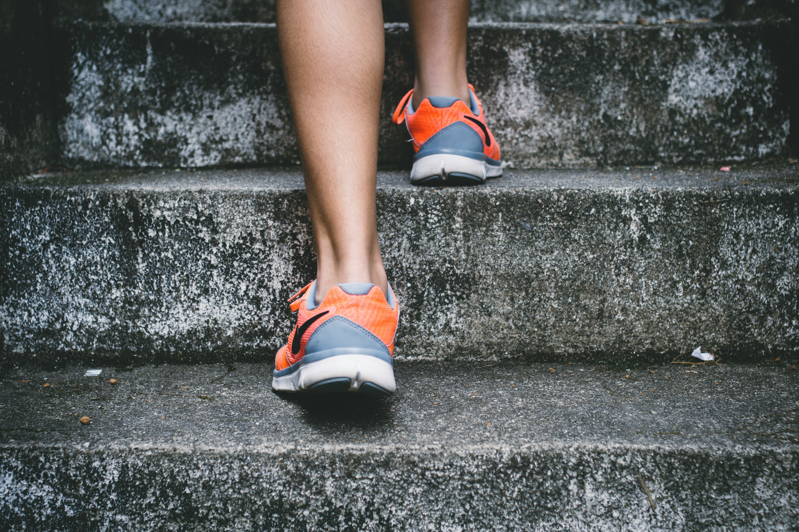

5 Langkah Memulai Pola Makan Sehat Tanpa Diet Menyiksa
Pelajari cara menyeimbangkan porsi karbohidrat, protein, dan serat harian secara bertahap tanpa perlu rasa lapar berlebihan.
Baca Selengkapnya
Angka 10.000 langkah sudah lama jadi target harian yang populer. Namun, manfaat kesehatan sudah mulai terasa pada jumlah langkah yang lebih rendah dari itu.
Angka ini lebih dikenal sebagai target yang mudah diingat dibanding hasil patokan medis yang kaku. Artinya, Anda tidak perlu merasa gagal kalau hari ini belum sampai angka tersebut.
Bergerak sedikit tetapi rutin lebih baik daripada olahraga berat sesekali. Tubuh mendapat manfaat dari gerak harian yang terus berulang.
Lihat rata-rata langkah Anda minggu ini, lalu tambah sekitar 1.000 langkah di minggu berikutnya. Cara bertahap lebih mudah dijalani dan lebih kecil risiko cedera.
Pelajari cara menyeimbangkan porsi karbohidrat, protein, dan serat harian secara bertahap tanpa perlu rasa lapar berlebihan.
Baca SelengkapnyaKupas tuntas mitos 10.000 langkah dan fakta ilmiah tentang kebutuhan gerak harian untuk menjaga kesehatan jantung dan stamina.
Baca Selengkapnya
Kualitas tidur menentukan metabolisme tubuh. Terapkan 4 kebiasaan malam ini untuk bangun dengan energi penuh keesokan hari.
Baca Selengkapnya